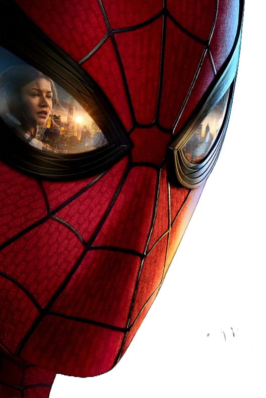
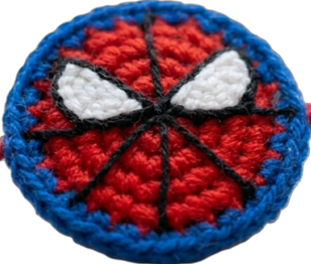

What is Make-A-Ton?
Make-A-Ton is a 24-hour innovation sprint where students transform ambitious ideas into working prototypes. Teams collaborate, experiment, and solve real-world problems while learning from mentors and industry experts.


NMake-A-Ton 9.0 is where ideas become products. Join South India's biggest student hackathon and spend 24 unforgettable hours building, learning, and competing alongside the region's brightest innovators. Whether you're writing your first line of code or shipping your tenth product, this is where ambitious ideas come to life. Build for impact, compete for recognition, and leave with more than just prizes. From cash awards and sponsor goodies to internships, mentorship, and lasting connections, Make-A-Ton is designed to reward great ideas and the people behind them.
The Centre for Innovation, Technology Transfer and Industrial Collaboration (CITTIC) has long nurtured startups and supported innovation across the student community at CUSAT. Make-A-Ton brings that spirit together into one high-energy 24-hour hackathon experience.
Make-A-Ton is a 24-hour innovation sprint where students transform ambitious ideas into working prototypes. Teams collaborate, experiment, and solve real-world problems while learning from mentors and industry experts.
From coding marathons to mentorship and networking, the event helps students turn ideas into prototypes and sometimes into startups.
Hosted at CITTIC, CUSAT, the experience blends campus energy, industry exposure, and a strong innovation culture.
Winning isn't just about the prize money. Outstanding teams also gain visibility, networking opportunities, sponsor recognition, and potential internship opportunities.
₹XXXXX cash prize and a showcase opportunity for the best overall solution.
₹XXXXX for the team that brings exceptional execution and innovation to the table.
₹XXXXX for the most polished, practical, and impactful product experience.
Special recognition for a solution that aligns with campus innovation and real-world impact.
Make-A-Ton is made possible by organizations that invest in student innovation, entrepreneurship, and technology. Together they help create an unforgettable experience for every participant.
Presented as the headline supporter of the event and its main showcase.
Elevates the experience with premium visibility and rewards for participants.
Backs the hackathon experience through prizes, mentorship, and community outreach.
Supports the build challenge, venue experience, and overall execution flow.
Brings expert guidance and learning opportunities for student teams.
Offers swags, goodies, and celebratory rewards for the participants.
Helps strengthen the cybersecurity and safety angle of the event experience.
Join the event as local champions, student clubs, and innovation advocates.
Since the official inventory is still pending, the below is a sample of the types of hardware that may be available for teams to use during the hackathon. The final list will be shared with the participants closer to the event date.
Microcontroller starter kits, jumper wires, breadboards, and dev boards for rapid builds.
Wi-Fi modules, Bluetooth peripherals, and USB accessories for hardware-backed demos.
Displays, sensors, buttons, LEDs, and other maker-friendly parts that teams can combine creatively.
The event offers a mix of collaboration, mentorship, and high-stakes building that makes it a memorable experience for first-time and experienced participants alike.
Everything you need before you start building.
Yes, participation is free for registered teams and individual builders.
Yes, teams are encouraged, but individuals can also register and be matched with others.
While it has strong roots at CUSAT, students from across India are welcome to participate.
Accommodation and food arrangements are typically shared with participants closer to the event date.
Yes, hardware and prototype-friendly ideas are welcome and encouraged.
Absolutely. Beginners are welcome and often bring some of the best ideas to the table.
Reach out to the Make-A-Ton team for registrations, sponsorships, or any event details.
Use the form below or email the team directly at contact@makeaton.in.
Support the next edition of Make-A-Ton with prizes, mentorship, swags, or networking opportunities.